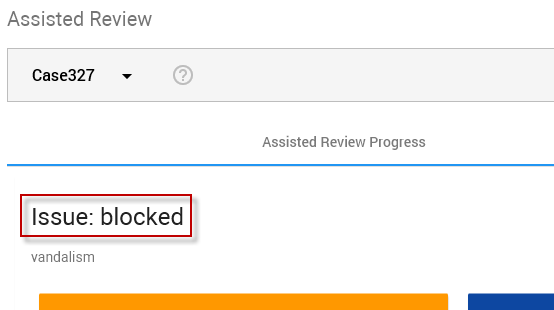
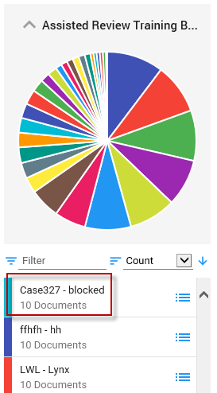

Note: A training batch in ZyLAB ONE is an issue in Assisted Review (see images below for the issue 'blocked'). The training batch of an issue in Facet View is preceded by the Project Name.
A training set contains all reviewed documents in a project. The training set is used to train the classifier.
A training batch is a selection of documents that might be responsive. All reviewed training batches are part of the training set. A training batch can also be called the return set.
The first or initial training set of an issue is the first reviewed training batch. With each iteration (new training batch), the training set grows as more reviewed documents are added to your first training set. A training set is made up of one or more reviewed training batches.
All training batches are available for review in ZyLAB ONE. Reviewers select a training batch (or a subset of the training batch; the review batch) and tag the documents as responsive or not responsive. Based on their choices, the Assisted Review classifier is trained. The results of the training (the Statistics and Graphs) can be viewed in the Assisted Review Progress tab in Assisted Review.
With each new training round, a new training batch will be created for an issue. The previous training batch will not be available anymore via the Facet View, but you can still search all documents that were reviewed.
|
|
Note: A training batch in ZyLAB ONE is an issue in Assisted Review (see images below for the issue 'blocked'). The training batch of an issue in Facet View is preceded by the Project Name. |
An issue in Assisted Review - Assisted Review Progress tab:

A training batch of an issue in ZyLAB ONE - Facet View:
